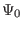
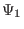

Consider the case that the boundary flux surface is circular with radius  and the center of the cirle at
and the center of the cirle at
 . Consider the case
. Expanding
. Consider the case
. Expanding  in the small parameter
,
in the small parameter
,
where
,
.
Substituting Eq. (383) into Eq. (382), we obtain
Multiplying the above equation by , we obtain
Further assume the following ordering
and
Using these orderings, the order of the terms in Eq. (384) can be
estimated as
 |
(388) |
The leading order (
order) balance is given by the
following equation:
It is reasonable to assume that  is independent of  since
corresponds to the limit
. (The limit
can have two cases, one is
, another is
. In the former case, must be independent of
since should be single-valued. The latter case corresponds to
a cylinder, for which it is reasonable (really?) to assume that is
independent of .) Then Eq. (396) is written
since
corresponds to the limit
. (The limit
can have two cases, one is
, another is
. In the former case, must be independent of
since should be single-valued. The latter case corresponds to
a cylinder, for which it is reasonable (really?) to assume that is
independent of .) Then Eq. (396) is written
(My remarks: The leading order equation (397) does not correponds
strictly to a cylinder equilibrium because the magnetic field
depends on .) The
next order (
order) equation is
It is obvious that the simple poloidal dependence of
will
satisfy the above equation. Therefore, we consider  of the form
where
is a new function to be determined. Substitute this into
the Eq. (), we obtain an equation for
,
Using the identity
equation () is written as
Using the leading order equation (), we know that the second and fourth term
on the l.h.s of the above equation cancel each other, giving
Using the identity
equation (407) is written
Using
equation (410) is written
which agrees with equation (3.6.7) in Wessson's book[12].
yj
2018-03-09